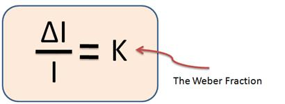
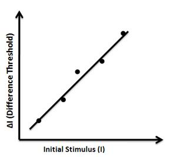
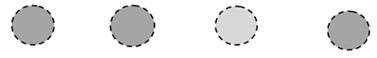

Weber's Law
Understanding human ability of noticing minute differences in shapes, colors, heights etc can help graphic designers in designing better interfaces and interactions. Perceptual ability to make out differences in objects, colors, shapes, texts etc influences the cognition and the interaction efficiency.
Can we perceive the difference between a line of 10cm length against a line of 10.05 cm ? Can we perceive the difference in holding a weight of 10.0 kg against a weight of 10.05 kg ? This incremental threshold for detecting the difference in any observed value is an important human factor useful in designing GUIs.
For an initial stimulus value I ( say 10 cm ) let the increment threshold for detecting a difference be ΔI ( say 0.05 cm ).
Weber's Law ( E. H. Weber, in 1834 ) states that the ratio of ΔI/I is constant for a specific measure.
Where
ΔI = Differential threshold
I = Initial stimulus intensity
K= Weber fraction
Weber’s Law states that the size of the just noticeable difference (jnd) is a constant proportion(K times) of the original stimulus value. It is the minimum amount by which stimulus intensity must be changed in order to produce a noticeable variation in sensory experience.
Thus there is a linear relationship between differential threshold and the initial stimulus value as depicted in the figure below.
The slope of the line is the Weber fraction (aka Fechner fraction).
Example
Let two circles filled with same color and intensity be displayed side by side. Suppose the initial color intensity is 100 for both circles. Now let us keep changing the color intensity of any one circle incrementally till the user perceives noticeable change or difference in their intensities. We will stop at this point and record this new color intensity. Let this new value be 110. Thus the differential threshold (jnd) = 10 (ΔI = 110 – 100 ) and the Weber’s constant in this case would be K = 10/100 = 0.1. If the Weber fraction for discriminating changes in stimulus is a constant proportion equal to 0.1 then the size of the just noticeable difference for a spot having an intensity of 1000 would be 100.
Some interesting human-sense JNDs (Just Noticeable Differences) are tabulated below :
Pitch: 1/333 Brightness: 1/60 Lifted Weights: 1/50Loudness: 1/10 Pressure on skin: 1/7 Taste: 1/5
Notice how our sensitivity to pitch is 70 times more acute than our sense of taste.
Webers Law as applied to user interfaces
Weber’s Law can be used for various sensory modalities in GUIs such as brightness, loudness, line length, visual weight of fonts in typography, color matching etc. Many times large amount of information is required to be displayed on a limited size computer screen. Information is displayed in various forms viz. text, pictures, drawings, maps, graphs, videos etc. Poor visual design of user interface lacks the ability of differentiating between two close enough visual stimuli e.g. two lines with different thicknesses in a map (for wide roads and narrow lanes).What is this threshold of line thickness that may lead to noticeable difference is governed by Weber’s law.The threshold of noticeable difference between color shades is also governed by Weber’s law.

After performing this experiment
- 1.You will know the human ability of distinguishing differences in rectangular shapes.
For example:
2.You will know the human ability of distinguishing differences in circular shapes.
For example:
3.You will know the human ability of distinguishing differences in color (opacity).
For example:

4.You will be able to compute the Weber fraction(K)for various measures mentioned above.
Experiment 1(Changing Shape – Rectangle )
- 1. You will see 6 blue colored rectangular blocks on the screen.
2. Your time will start after you press “START” button.
3. Observe all blocks minutely and identify the one that expands in breadth after some
time.
4. The moment you observe the difference click on the same block to stop the timer.
5. Record the time and the % noticed difference or the % area difference.
6. Repeat the steps 1-5 and plot the graph between '% area difference' Vs 'number of attempts.'
7. To repeat the same experiment first reset the timer by pressing “RESET” button.
Experiment 2(Changing Shape - Circle )
- 1. You will see 6 black colored circles on the screen.
2. Your time will start after you press “START” button.
3. Observe all circles minutely and identify the one that expands in radius after some time.
4. The moment you observe the difference click on the same circle to stop the timer.
5. Record the time and the % noticed difference or the % area difference.
6. Repeat the steps 1-5 and plot the graph between '% radial difference' Vs 'number of attempts'.
7. To repeat the same experiment first reset the timer by pressing “RESET” button.
Experiment 3(Changing Color - Circle)
- 1. You will see 6 black colored circles.
2. Your time will start after you press “START” button.
3. Observe all circles minutely and identify the one that changes color after some time.
4. The moment you observe the difference click on the same circle to stop the timer.
5. Record the time and the % noticed difference or the % color difference.
6. Repeat the step 1-5 and plot the graph between '% color difference' Vs 'number of attempts'.
7. To repeat the same experiment first reset the timer by pressing “RESET” button.

Experiment 1
-
1. You will see 6 blue colored rectangular blocks on the screen.
2. Your time will start after you press “START” button.
3. Observe all blocks minutely and identify the one that expands in breadth after some time.
4. The moment you observe the difference click on the same block to stop the timer.
5. Record the time and the % noticed difference or the % area difference.
6. Repeat the steps 1-5 and plot the graph between '% area difference' Vs 'number of attempts'.
7. To repeat the same experiment first reset the timer by pressing “RESET” button.
Experiment 2
-
1. You will see 6 black colored circles on the screen.
2. Your time will start after you press “START” button.
3. Observe all circles minutely and identify the one that expands in radius after some time.
4. The moment you observe the difference click on the same circle to stop the timer.
5. Record the time and the % noticed difference or the % area difference.
6. Repeat the steps 1-5 and plot the graph between '% radial difference' Vs 'number of attempts'.
7. To repeat the same experiment first reset the timer by pressing “RESET” button.
Experiment 3
-
1. You will see 6 black colored circles.
2. Your time will start after you press “START” button.
3. Observe all circles minutely and identify the one that changes color after some time.
4. The moment you observe the difference click on the same circle to stop the timer.
5. Record the time and the % noticed difference or the % color difference.
6. Repeat the step 1-5 and plot the graph between '% color difference' Vs 'number of attempts'.
7. To repeat the same experiment first reset the timer by pressing “RESET” button.

Q1. What conclusions will you draw from the graphs of the data gathered from the simulated experiments?
Q2. What other parameters affect our ability to perceive change in color / shape in certain elements?
Q3. Will the “JND” for a particular measure or sense change if you are multitasking? If yes why ?
Q4. How can you relate the Weber’s law to web browsing activity?
There exists, for all senses a lower limit below which nothing can be perceived. This being expressed as the threshold of vision, the threshold of taste and so on. Here are some thresholds for the five human senses:
Hearing --> the tick of a watch in quiet conditions at 20 feet
Vision --> the flame of a single candle at 30 miles distance on a dark night
Smell --> one drop of perfume in a 6 room appartment
Taste --> one teaspoon of sugar in 2 gallons of water
Touch --> the wing of a fly falling on cheek from 1 cm
Find out human sense JNDs for the following parameters of a WIMP interface.
- a) Line thickness
b) Area of square
c) Document zoom control
d) Visual indication on progress bar